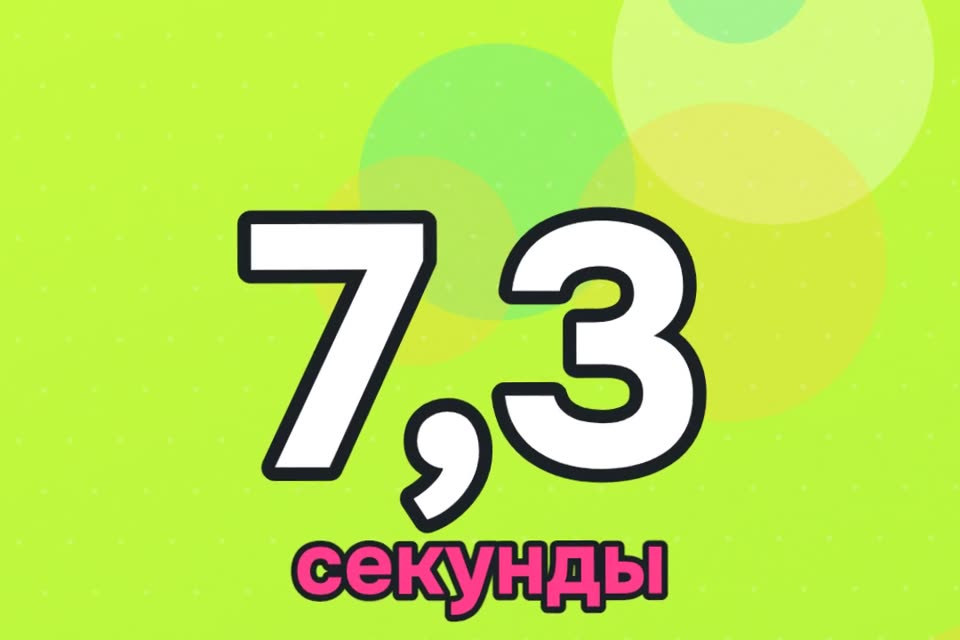

Памятка для родителей и клон своего голоса
Мошенникам хватает нескольких секунд из любого голосового. Ниже памятка для мамы и папы и бесплатный клон своего голоса без облака.
- бесплатно
- работает без облака
- только свой голос
К ролику «Угадай, где мой голос» · обновлено 27 октября 2026

Для памятки ничего не нужно. Для клона: Mac на M1 и новее, Windows или Linux, около 5 ГБ места и интернет на время установки.
Памятка для родителей
Перешлите маме и папе.
Мошенникам хватает нескольких секунд голоса из любого голосового, сторис или видео. По телефону клон почти не отличить, надёжного детектора нет. Защищает договорённость.
Договоритесь заранее
- Семейное слово. Слово или фраза, которой нет в соцсетях, переписке и на фото (не кличка собаки и не дата рождения). Звонит «сын» и просит деньги — спросите слово. Не знает — кладите трубку.
- Скажите прямо: «Я никогда не попрошу денег по телефону или в голосовом. Если попрошу, это не я».
Если звонят «от сына», «от внучки» или «от учителя»
- Не спорьте, положите трубку. Мошенники давят спешкой: «срочно», «попал в беду», «никому не говори».
- Перезвоните сами на номер, который давно сохранён. Не на тот, с которого звонили.
- «Учитель» просит деньги, данные или код — позвоните в школу по известному номеру.
- Никогда не диктуйте коды из СМС, данные карты и пароли. Ни сыну, ни «банку», ни «полиции».
- Не переводите на «безопасный счёт» и не отдавайте наличные курьеру. Таких счетов не бывает.
- Голос родной, но что-то странно? Спросите то, что знаете только вы двое: «Как звали кота на даче?»
Что сделать самим
- Не выкладывайте в открытый доступ длинные голосовые и видео, где близкие говорят крупным планом.
- Странное голосовое в семейном чате с просьбой о деньгах — сначала перезвоните человеку.
Свой голос за 2 шага
Поставьте VoiceStudio
Модели скачиваются один раз, дальше всё считается на вашем компьютере.
Открытая программа github.com/debpalash/VoiceStudio (AGPL-3.0). Внутри движок OmniVoice, им же озвучен наш ролик.
Что нужно: Mac на M1 и новее, Windows или Linux; около 5 ГБ места; интернет на время установки. На Mac с Intel работает только интерфейс.
Обычная установка
- Откройте страницу релизов.
- Скачайте файл под систему: Mac —
…-mac-arm64.dmg, Windows —.exe, Linux —.AppImageили.deb. - Перетащите в «Программы». Если macOS не пускает: правой кнопкой → «Открыть».
- Voice cloning → добавьте запись своего голоса → впишите текст → Generate. Когда попросит скачать модель, согласитесь.
Или одной фразой через Claude Code
Если стоит Claude Code (или Codex, Cursor), вставьте фразу из README проекта:
Install the VoiceStudio Electron app on this device and verify it works, following
https://github.com/debpalash/VoiceStudio/blob/main/docs/install/agent.mdЧитайте, что агент предлагает, прежде чем жать «да».
Агент сам определит железо, спросит перед скачиванием моделей и сделает пробную озвучку.
Запишите хороший образец голоса
Наш опыт с десятков дублей. Образец для клона в ролике длится 7,3 секунды.
- Тихая комната. Окно закрыто, вентилятор и телевизор выключены. Лучше комната со шторами и мебелью.
- Без эха. Не в ванной и не на кухне с кафелем: эхо клон копирует вместе с голосом.
- 7–15 секунд живой речи. Одна-две фразы подряд, без длинных пауз.
- Говорите как другу, а не как диктор. Как скажете в образце, так клон и будет говорить дальше.
- Без «эээ», смеха и щелчков рта. Клон повторит их как потрескивание. Помогает стакан воды перед записью.
- Микрофон: встроенный в MacBook или диктофон телефона на расстоянии ладони. Беспроводные наушники часто дают глухой звук.
- 2–3 дубля, выберите самый естественный.
- Впишите точный текст образца, если программа просит.
Сказка детям вашим голосом, поздравление, озвучка домашнего видео.
Если застряли
macOS не открывает VoiceStudio
Правой кнопкой по программе в «Программах» → «Открыть».
Клон потрескивает
В образце были «эээ», смех или щелчки рта: клон повторяет их как потрескивание. Перезапишите образец, перед записью выпейте воды.
Клон звучит гулко или глухо
Эхо клон копирует вместе с голосом: запишите не в ванной и не на кухне с кафелем, лучше в комнате со шторами и мебелью. Глухой звук часто дают беспроводные наушники: возьмите встроенный микрофон MacBook или диктофон телефона на расстоянии ладони.
Клон говорит как диктор
Как скажете в образце, так клон и будет говорить дальше. Запишите 2–3 дубля так, будто говорите другу, и выберите самый естественный.
Ограничения
- На Mac с Intel работает только интерфейс.
- Надёжного детектора клона нет: по телефону его почти не отличить. Защищает договорённость, а не программа.
- Клонируйте только свой голос или голос человека, который сам разрешил.